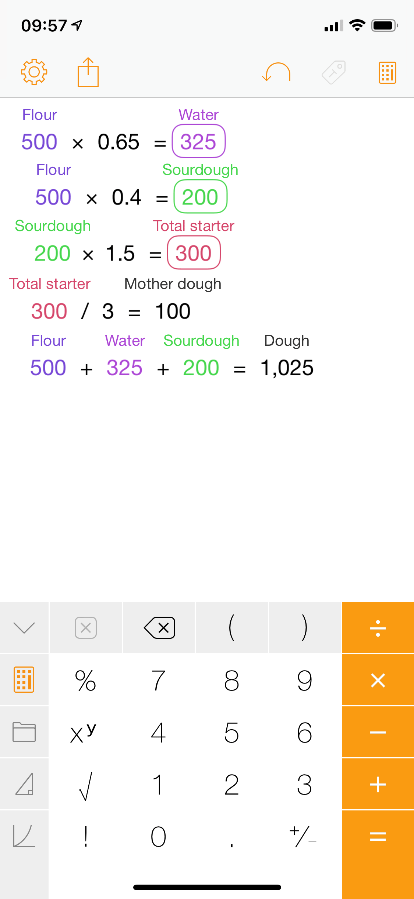

Literate Calculations in Emacs
It is no secret that I am a big fan of literate programming for many use cases. I think it is a great match for investigative or exploratory notes, research, and configuration.
On a Friday evening about two weeks ago, my flatmate came up with an idea for doing calculations in a literate way. Of course, if you really wanted to, you could use a Jupyter Notebook, but we were looking for something more lightweight, and ideally integrated into Emacs.
A quick search came up empty, so on Saturday morning I got started writing what came to be Literate Calc Mode. The features I wanted included named references to earlier results, spreadsheet-like recalculations on every change, and the ability to save my calculations to a file. And then of course the ability to interlace calculations with explanatory text.
It was in part inspired by the iOS app Tydlig
, which also provides calculations with automatically updating references to earlier results, but does not allow saving the workspaces as files, which I find very limiting.
But enough talk, this is what the result looks like in action:
This is literate-calc-minor-mode, running alongside org-mode. As you can see, it automatically picks up calculations and inserts the results as overlays at the end of the line. It allows the user to bind results to variables, which can even have names with spaces. Any change causes all values to be recalculated, similar to a spreadsheet.
Because it uses Emacs’ built-in calc-eval behind the scenes, it supports almost everything M-x calc does, including formulas, complex units, and unresolved mathematical variables.
Of course there are also other convenience functions, such as evaluating just a single line, or inserting the results into the file for sharing. I do have some more plans for the future, which are outlined in the documentation.
In addition to hopefully providing some value to other Emacs users, this was also a great learning experience.On a meta-level, writing this post has taught me how to use <video> on my blog.
I have learned a lot about overlays in Emacs, and I published my first package on MELPA, which was a thoroughly pleasant experience.